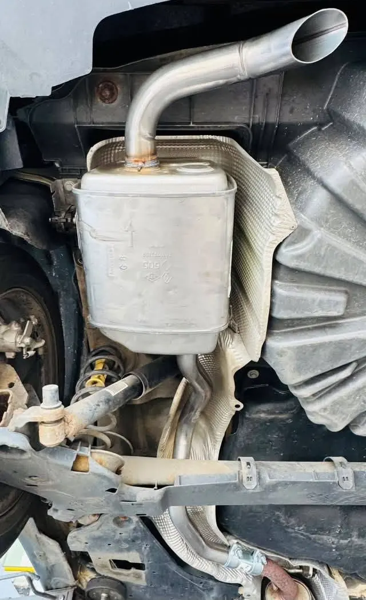

Opel Astra
Katalizátor, középső és hátsó kipufogódob csere
Dob, flexi cső, katalizátor és egyedi rendszerek. 2010 óta a Megyeri úton, szombat délelőtt is.
Nem kell tudnia, melyik alkatrész a hibás. Válassza ki, mit hall vagy lát, és megmutatjuk, hol szokott lenni a gond.

A dobok belülről rozsdásodnak, és amikor átlyukadnak, az autó hirtelen hangosabb lesz. Nem kell az egész rendszert cserélni, ha a többi része jó.
Saját munkánk: Renault Megane, hátsó kipufogódob csere
Tájékoztató, pontosan a felmérés dönti el.
Erre kérek időpontotValódi autók a műhelyünkből, és ami alájuk került.
Katalizátor, középső és hátsó kipufogódob csere
Középső és hátsó kipufogódob csere
Középső és hátsó kipufogódob csere
Flexi cső csere
Hátsó kipufogódob csere
Flexi cső csere
Flexi cső csere
Kipufogóra szakosodott műhely: a kisebb javítástól az egyedi rendszerig.
Egyeztetünk, és akár már másnapra kap időpontot.
Megnézzük az autót, átbeszéljük a lehetőségeket, és érthetően elmagyarázzuk, mi kell.
Segítünk kiválasztani, és sokszor másnapra meg is érkezik.
Telefonon szólunk, amikor elkészült, pár óra múlva már viheti is.
„Manapság kevés az ilyen szakember, aki korrekt ajánlattétel után gyorsan és szakszerűen végzi el a munkáját.”Google-vélemény
„Nagyon korrekt, segítőkész, nagyon jó áron és nagyon jól dolgozik. Elmagyaráz mindent érthetően.”Google-vélemény
Csak azt, ami indokolt. A munkáink között van, ahol csak a flexi csövet vagy a hátsó dobot cseréltük, és van, ahol a katalizátort is a két dobbal együtt.
A felmérés után megmondjuk. Az alkatrész sokszor másnapra megérkezik, a csere pedig általában pár óra.
Az autótól és a hibától függ. A felmérés után kap ajánlatot, és azt is átbeszéljük, milyen lehetőségei vannak.
Igen, szombaton 8 és 12 óra között is nyitva vagyunk. Hétköznap 8 és 17 óra között várjuk.
Ha lelóg a kipufogó, vagy kipufogószagot érez az utastérben, hívjon még aznap. Ha csak hangosabb lett, általában el lehet jönni vele, de érdemes minél hamarabb megnézetni.
7623 Pécs, Megyeri út 26. A cég 2010 óta ezen a telephelyen működik.